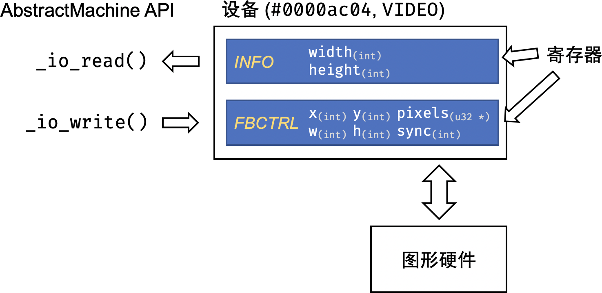
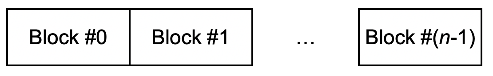

使用 AbstractMachine 设备需要引用 amdev.h。
AbstractMachine 内置了一些设备，每个设备可以看成是由若干控制寄存器组成的 “黑盒子”。每个寄存器要么是只读的，要么是只写的，读取寄存器可以获得设备的状态；写入寄存器可以执行某个设备上的操作。

在 AbstractMachine 上，设备只能通过以下 API 访问：
size_t _io_read(uint32_t dev, uintptr_t reg, void *buf, size_t size); size_t _io_write(uint32_t dev, uintptr_t reg, void *buf, size_t size);
_io_read 从编号为 dev 的设备、编号为 reg 的寄存器中读取数据，buf 指向一个缓冲区 (大小为 size)；_io_write 向编号为 dev 的设备、编号为 reg 的寄存器写入数据，buf 指向写入的数据，写入数据的数量为 size。以上图的 VIDEO 设备为例，执行 _io_read 可以获取屏幕大小信息：
struct _DEV_VIDEO_INFO_t video_info; int nread = _io_read(_DEV_VIDEO, // VIDEO 设备 _DEVREG_VIDEO_INFO, // VIDEO_INFO 寄存器 &video_info, // 缓冲区 sizeof(video_info) // 缓冲区大小 ); assert(nread == sizeof(video_info)); printf("Screen size: %d x %d\n", video_info.width, video_info.height);
同理，如果希望在屏幕的 (200, 100) 绘制一个 的红色方块，在准备好寄存器数值后，使用 _io_write 绘制：
uint32_t pixels[16 * 16]; for (int i = 0; i < LENGTH(pixels); i++) { pixels[i] = 0xff0000; // 00RRGGBB } _DEV_VIDEO_FBCTRL_t video_ctrl = (_DEV_VIDEO_FBCTRL_t) { .pixels = pixels, // 待绘制的数据 .x = 200, .y = 100, // 绘制在屏幕上的坐标 .w = 16, .h = 16, // 16 x 16 .sync = 1, // 同步 }; _io_write(_DEV_VIDEO, _DEVREG_VIDEO_FBCTRL, &video_ctrl, sizeof(video_ctrl));
_ioe_init() 完成设备初始化；_io_read 和 _io_write 是同步的，即 API 会等操作完成后才返回 (例如像 VIDEO 设备的 FBCTRL 寄存器写入绘图命令，会等图形绘制完毕后返回)，操作过程中可能访问内存。_halt() 或崩溃)；0；否则返回读取/写入的字节数。_io_read 和 _io_write 可以被中断；但任一时刻，对同一个设备只允许有一个尚未返回的 I/O 操作。对同一个设备的并发 I/O 操作为 undefined behavior。AbstractMachine 已经对设备进行了抽象。尽管不同平台上的键盘、时钟、显示控制器等设备行为各不相同，但 AbstractMachine 以统一的接口访问它们。
| 设备编号 | 设备名称 | 寄存器 | 功能描述 |
|---|---|---|---|
PERFCNT |
性能计数器 | 若干性能相关的计数器；具体机器实现相关。 | |
INPUT |
输入设备 | KBD (r) |
读取上一次键盘事件(keyup/keydown)的按键码。 |
TIMER |
定时器 | UPTIME (r) |
系统启动时间的毫秒数。 |
DATE (r) |
系统的日期和事件(精确到秒)。 | ||
VIDEO |
显示控制器 | INFO (r) |
屏幕的宽度和高度。 |
FBCTRL (w) |
屏幕绘制寄存器。 | ||
SERIAL |
串口控制器 | RECV (r) |
串口接收收据。 |
SEND (w) |
串口发送数据。 | ||
STAT (r) |
串口状态信号。 | ||
CTRL (w) |
串口控制信号。 | ||
STORAGE |
持久存储 | INFO (r) |
持久存储的块大小和块数量。 |
RDCTRL (w) |
从持久存储读取数据到内存。 | ||
WRCTRL (w) |
将内存数据写入持久存储。 |
参考 amdev.h 中，首先定义了各个设备的编号：
#define _DEV_PERFCNT 0x0000ac01 #define _DEV_INPUT 0x0000ac02 #define _DEV_TIMER 0x0000ac03 #define _DEV_VIDEO 0x0000ac04 #define _DEV_SERIAL 0x0000ac05 #define _DEV_STORAGE 0x0000ac05
每个设备可能有多个寄存器，设备寄存器是使用宏定义的：
#define _AM_DEVREG(dev, reg, id, ...) \ enum { _DEVREG_##dev##_##reg = id }; \ typedef struct { __VA_ARGS__; } __attribute__((packed)) \ _DEV_##dev##_##reg##_t;
例如，我们定义 INPUT (输入) 设备的 KBD (键盘) 寄存器，使用以下代码：
_AM_DEVREG(INPUT, KBD, 1, int keydown, keycode)
宏展开后：
enum { _DEVREG_INPUT_KBD = 1 }; // 设备寄存器编号 (reg) typedef struct { // 设备寄存器结构体 int keydown, keycode; } _DEV_INPUT_KBD_t;
即 _AM_DEVREG 定义了：
_DEVREG_INPUT_KBD)；_DEV_INPUT_KBD_t)，这部分是将 _AM_DEVREG 在 dev, reg, id 之后所有的可变参数 (__VA_ARGS__) 粘贴到 typedef struct { ... } 中实现的。例如，从 TIMER 设备的 DATE 寄存器获得日期：
_DEV_TIMER_DATE_t date; size_t nread = _io_read(_DEV_TIMER, // 设备编号 _DEVREG_TIMER_DATE, // 寄存器编号 (#2) &date, // 读取的缓冲区 sizeof(date) // 恰好等于寄存器大小 ); if (nread == 0) { printf("RTC is not supported for this platform."); } else { printf("Today is %d-%d-%d\n", date.year, date.month, date.day); }
INPUT)目前只有键盘设备。读取 KBD 寄存器会获得按键事件队列中最早的一个事件，事件包含按键的行为 (keydown 或 keyup) 以及按键的编码：
[R] INPUT_KBD int keydown // = 1为按下；= 0为松开 int keycode // 按键扫描码
按键的编码在 amdev.h 中定义。读取 KBD 寄存器不会等待按键的到来；如果没有按键，返回 _KEY_NONE。
定时器有两个寄存器，分别是毫秒为单位的系统启动时间 (UPTIME) 和实时时钟 (DATE)。
[R] TIMER_UPTIME uint32_t hi // 开机时间(ms)的高32位 uint32_t lo // 开机时间(ms)的低32位 [R] TIMER_DATE int year // 当前时间(年) int month // 当前时间(月) int day // 当前时间(日) int hour // 当前时间(时) int minute // 当前时间(分) int second // 当前时间(秒)
VIDEO)显示控制器有两个寄存器，INFO 用于获取屏幕的信息，FBCTRL 用于控制帧缓冲。
[R] VIDEO_INFO int width // 屏幕宽度(像素) int height // 屏幕高度(像素) [W] VIDEO_FBCTRL int x, y // 绘制矩形的坐标 int w, h // 绘制矩形的跨度和高度 uint32_t *pixels // 绘制w * h个像素，32bit AARRGGBB格式，行优先存储 int sync // 是否刷新屏幕
SERIAL)串口有四个寄存器。
[R] SERIAL_RECV uint8_t data // 串口接收数据 [W] SERIAL_SEND uint8_t data // 串口发送数据 [R] SERIAL_STAT uint8_t data // 串口状态数据 [W] SERIAL_CTRL uint8_t data // 串口控制数据
STORAGE)持久存储是以块 (连续的字节) 为单位访问的存储设备：

读取 INFO 获取持久存储的基本信息：每一个块 (block) 的大小 (字节数 blksz，是 2 的整数次幂) 和块的数量 blkcnt。通过写入 RDCTRL/WRCTRL 寄存器读取/写入数据。读取/写入均以块为单位。
STORAGE_INFO uint32_t blksz // 持久存储的块大小 uint32_t blkcnt // 持久存储的块数 STORAGE_RDCTRL void *buf // 读取的缓冲区 uint32_t blkno // 读取的起始块编号 uint32_t blkcnt // 读取的块数量 STORAGE_WRCTRL void *buf // 写入的缓冲区 uint32_t blkno // 写入的起始块编号 uint32_t blkcnt // 写入的块数量